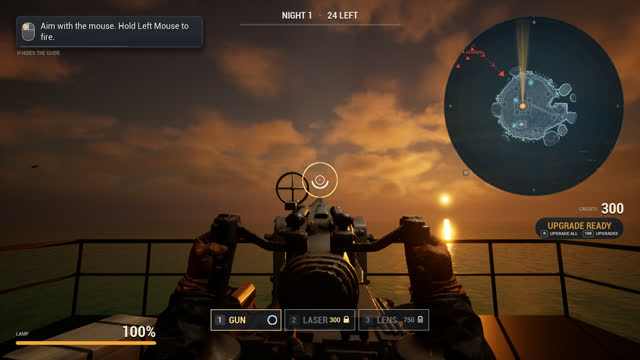
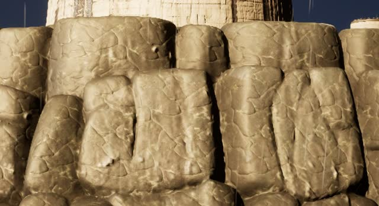

FYR
A lighthouse defence for Epic's 2026 AI MegaJam (theme: Director's Cut), made in four days by one developer directing AI agents
A storm at sea, a lighthouse on a black rock, and flying saucers that want its lamp out. In the keeper's hut at the foot of the rock you plan the night at a monitor: the island as a chart, turrets bought, placed and upgraded with the credits you have earned. Then you walk out into the storm and up into the tower, and fight from it: the gallery gun, a laser that cuts saucers in two, and at last the great lens itself, while your turrets fire on their own.
Every night is yours to run. Press Tab and time stops: the plan comes up on a tablet in your hands, you change what needs changing, and the night carries on from the exact moment you left it. If the lamp goes dark, you get the same night again with everything you had, and the chance to plan it better.
By the numbers counted Fri 13 Nov, 17:45
- 26,735 lines of C++ game code
- 73 Rodin jobs (3D models and rigs)
- 94 kinds of 3D model in the game
- 416 pictures from the image model
- 203 sound effects, all synthesised
- 48 spoken lines
- 8 pieces of music
- 3 Poly Haven assets (CC0)
- 15 lanes of agents in the rebuild
- 205 commits to the game's repository
How each number was counted
- 26,735 lines of C++ game code
- Non-empty lines in the 74 source files of the game (game/Source), all written by the coding agents during the jam.
- 73 Rodin jobs (3D models and rigs)
- Distinct generation and rigging ids in the job records of the asset folders, the prompt files and the agents' notes, from 12 November 06:00 on. Not every job became a model in the game; several were tries that failed and were sent again.
- 94 kinds of 3D model in the game
- Model folders in the game's content (Content/Fyr/Models): Rodin models, local 3D models and Poly Haven models together.
- 416 pictures from the image model
- Picture files the image model wrote for FYR's own picture jobs (one file a seed) from 12 November 06:00 on. Cut-outs are left out. Most were references for 3D models; none is in the game as it is.
- 203 sound effects, all synthesised
- Sound effect files imported into the game (Content/Fyr/Audio/SFX), each made by our own synthesis code; one kind of sound often has several variants.
- 48 spoken lines
- Voice lines in the game (Content/Fyr/Audio/Voice), each counted once however many takes of it are in; 90 voice files in all.
- 8 pieces of music
- Music files in the game (Content/Fyr/Audio/Music), made with the local music model.
- 3 Poly Haven assets (CC0)
- Poly Haven models and surfaces in the project's CC0 lock, fetched during the jam, that the entry's declaration lists.
- 15 lanes of agents in the rebuild
- Lanes of the rebuild that have a written brief (BRIEF.md, and BRIEF-2.md for a lane's second round), each worked by one Claude Code agent at a time, most in their own git worktree; the integrator, the verifier and this log are lanes too. A lane whose agent was restarted counts once.
- 205 commits to the game's repository
- Commits in the game's own (private) repository; its history shows when each thing was made.
Newest pictures from the running game

Before (left) and after (right), 17:23: the keeper's gloves closed round slim, round grips instead of beside fat ones, and the gun platform as a riveted, worn iron deck with real stanchions instead of a smooth dark sheet. Merged at 17:41.
From the running game Fri 13 Nov, 17:44

The new HUD as the developer first saw it at 16:41: the guide, the night's line, the station slots and the lamp (top); close-ups of the crosshairs with hit and kill markers (middle); a night held and a night lost (bottom). He liked it better than the old one and asked for a nicer frame than the box round UPGRADE READY; by 17:25 the box was gone. This picture still has the old "TAB CUT" label.
From the running game Fri 13 Nov, 17:44

Night 1 at dusk with the new HUD and the living chart.
From the running game Fri 13 Nov, 17:44

Night 1 at dusk with the stand-in HUD: a flat blue square for a map with dots on it, a row of lamp blocks and a timecode.
From the running game Fri 13 Nov, 17:44

Three kills in the game at 16:56, storm, at the gun: orange fire with dark smoke rolling through it, and wreckage thrown out.
From the running game Fri 13 Nov, 17:43

The same rock with the new material: fractured stone with salt in the cracks.
From the running game Fri 13 Nov, 17:43


The gallery: all 35 pictures in order, with before and after
Latest from the log
- 2 failures Catching up, part three: the developer's first look and what each lane did, the first package, the newest tools, and a stop at 17:30 At 15:20 the developer gave his first verdicts on the rebuild: saucers in clumps, a dead map, a HUD below a shooter's standard, black screens between nights, fingers through the gun's handles. What each lane did about…
-
1 failure
Catching up, part two: rain on the graphics card, latency measured for real, photoreal rock, and explosions from Blender
The storm got its own rain, wet rock, rain on the lantern glass and lightning that lights the cloud; Reflex latency was measured in a real window (7.5 to 8.8 ms on, 13 to 16 off) and ray tracing stays off by default…
-
 2 failures
Catching up, part one: the hut from Rodin, a lens sent back, the tablet, and the rules of the night
This log fell four hours behind. This entry and the two after it catch up from what the lanes wrote down while they worked. Part one: the keeper's hut and everything in it as Rodin models from our own pictures, what…
2 failures
Catching up, part one: the hut from Rodin, a lens sent back, the tablet, and the rules of the night
This log fell four hours behind. This entry and the two after it catch up from what the lanes wrote down while they worked. Part one: the keeper's hut and everything in it as Rodin models from our own pictures, what…
Look inside
- How it is made10 toolsWho does what, every tool with its licence, and what was prepared before the jam.
- The log6 entriesDay by day and hour by hour: what was built, with which tool and prompt.
- Gallery35 picturesEvery picture in order, generated ones with their prompts, with before and after.
- What went wrong9 failuresNewest: The first playable's package failed